「レアチーズとバスクチーズの中間」
半熟抹茶チーズケーキのレシピ
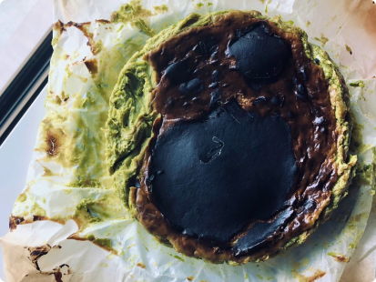
どうもー！自炊大学生のほうれん草(仮名)です。
今回は中身はとろける半熟、外はバスチーのような食感
半熟抹茶チーズケーキ
のレシピを紹介していきますノ
レストランやカフェのチーズケーキ
といっても騙せるほど美味いです...。
因みに私は、このチーズケーキが好きすぎて冗談抜きで10回以上作りました😊
材料
- クリームチーズ350g
- 抹茶パウダー5g(無くてもOK!)
- 砂糖100g
- 卵4個(卵黄2個、全卵2個を使用します)
- 生クリーム(植物性ホイップも可)200ml
半熟抹茶チーズケーキの作り方
1.ボウルにクリームチーズをいれて柔らかくする
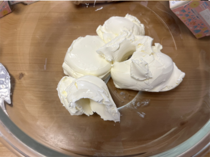 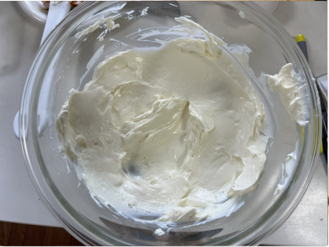
ポイント
作る前にクリームチーズを常温に戻しておくのがオススメ
イメージはマヨネーズくらいの粘度になるまで混ぜる
硬い場合はレンジ600wで30秒加熱して混ぜてね
(加熱しすぎると分離するので注意)
1-2.オーブンを250°の予熱をスタートする
2.砂糖100g、抹茶パウダー5gをいれて混ぜる
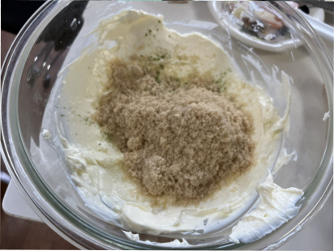 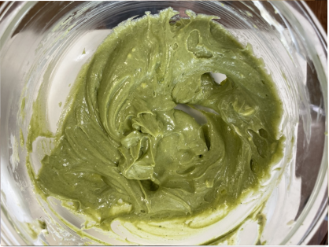
ポイント
砂糖は3回くらいにわけていれるとダマになりにくい
砂糖が溶けきるようにゴムベラでしっかり混ぜよう
3.別の器に卵黄2個と全卵2個を割って混ぜる
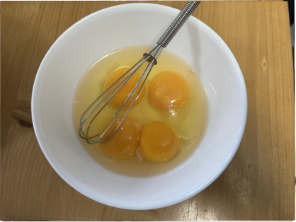 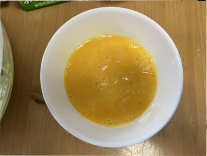
ポイント
卵のコシを切るようにしっかり混ぜよう
4.クリームチーズが入ってるボウルに卵を３回に分けて混ぜる
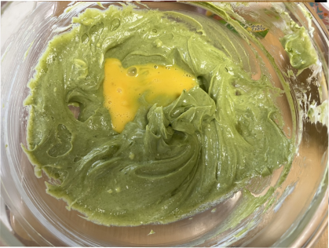
ポイント
砂糖は出来たらで良いが、卵は絶対に
3回に分けて
加えてほしい
5.生クリーム200mlを加えて混ぜる
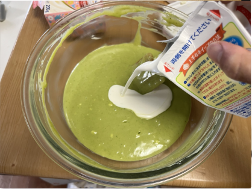6.耐熱容器にクッキングシートを引き、ザルで濾して入れる
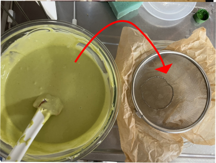7.250°に予熱したオーブンで17分焼く
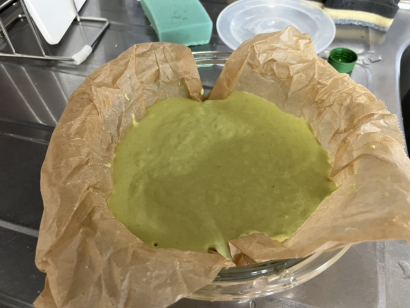
ポイント
表面が揺れて崩れそうな感じになればOK
焼き終わりは全然固まってないけど冷蔵庫で冷やすと固まるから安心
して!
ここで焼きすぎない
ことが一番大事！20分以上焼くと絶対に失敗するので気をつけて
7.冷蔵庫で一晩(7時間以上)寝かす
ポイント
冷やす前は絶対に味見をしないこと。ケーキが崩れます。
8.温めた包丁で切ると綺麗に切れます
参考にした動画はこちら↓(焼き時間は24分となっていますが、17分程度がオススメです。)